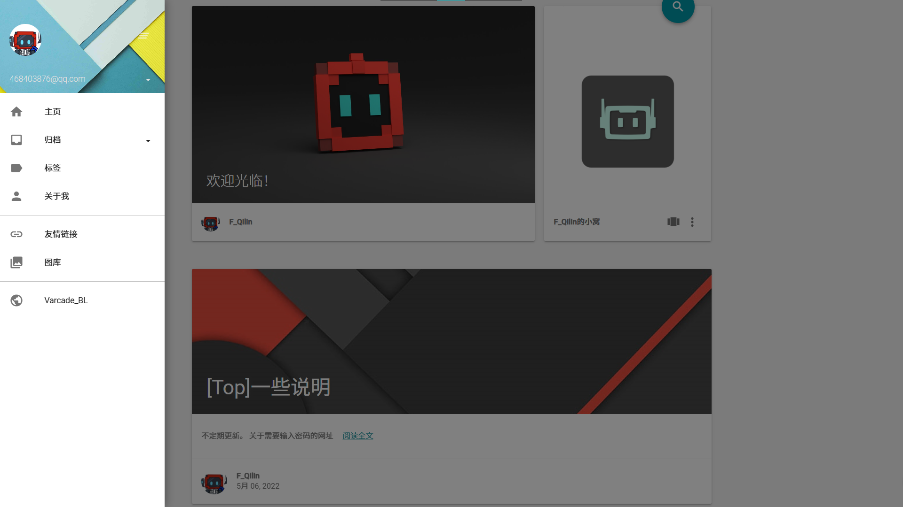
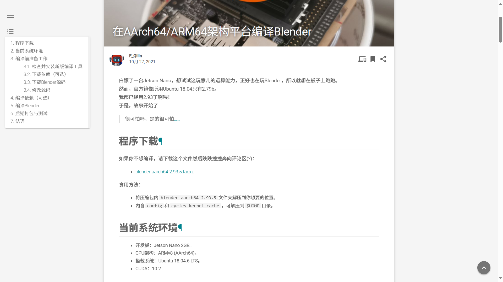
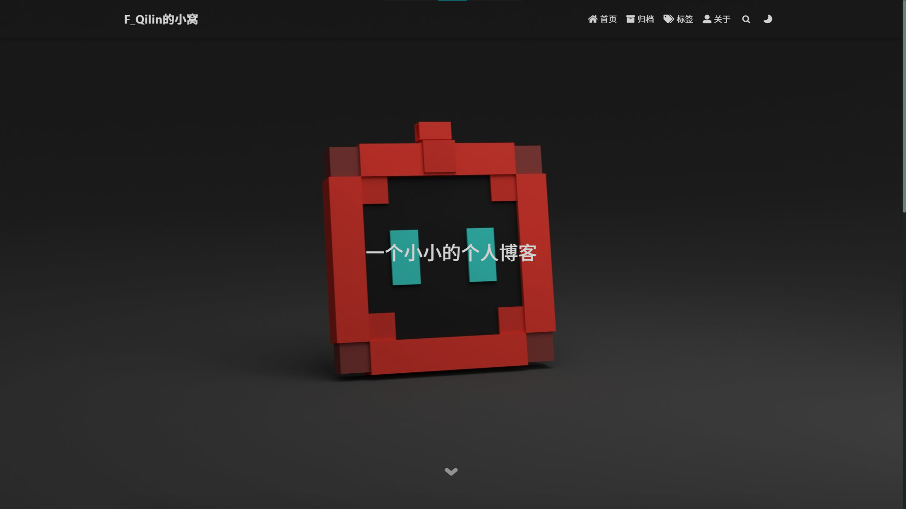
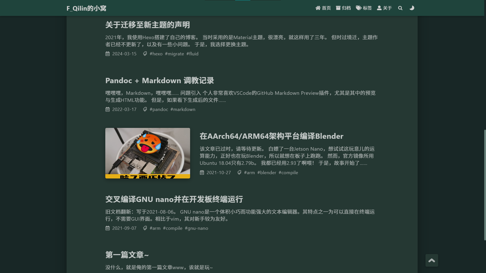
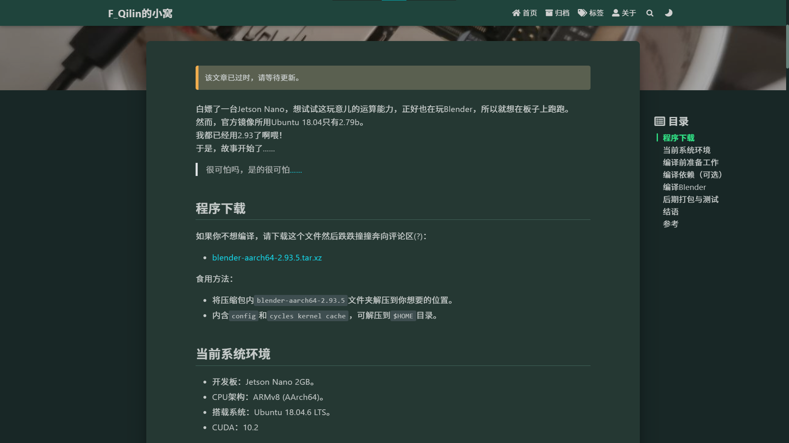

关于迁移至新主题的说明
2021年，我使用Hexo搭建了自己的博客。
当时采用的是Material主题，很漂亮，就这样用了三年。
但时过境迁，主题作者已经不更新了，以及有一些小问题。
于是，我选择更换主题。
旧主题存在的问题


- 部分EJS使用了
config.url + url_for(path)的离谱语句，这会导致像https://fqilin.top/blog/的博客地址下/path被解析为https://fqilin.top/blog/blog/path。解决方法：将
config.url + url_for(path)替换为full_url_for(path)。不过我觉得直接用url_for(path)更好。 - 若想深度自定义，需要修改主题源码，在此分享几个例子：
daily_pic不daily。解决方法：添了点JS。
- Gitalk评论
id参数固定为初始化时文章地址，如果文章地址变了就会无法找到评论。解决方法：在文章中定义
comment_id参数，同时修改EJS。
- 离谱的玩意儿，比如在JS语句中插入HTML注释。
- 置顶文章所需插件
hexo-helper-post-top的依赖为"hexo": "^3.1.1"，这会导致无法修复的依赖漏洞问题。评价是无语。
- 没有深色模式。
这里给个我修改后的diff。
新主题使用体验
现在换成了Fluid主题，这款主题也采用Material Design风格，而且有夜间模式，且可以通过注入的方式修改源码，方便后期部署。



好爽，但是相比于旧主题还是有一些小问题：
- Gitalk问题同上，但这次通过注入的方法更优雅地修改，同时实现了一套主题适配CSS。
新的问题是，评论区的代码块似乎只支持浅色模式的高亮……
我犯难了。 - 可能得自己实现图库界面了，正在做缝合怪……
- 深浅色切换过程有些元素没有动画，不过也无妨。
总结
非常好主题，使我的心情舒畅。
而且这个主题还在维护，想必很长一段时间内都不用考虑主题方面的问题了。
现在就着手准备剩余界面的移植了！（指图库
好哇，很好哇！狠狠地注入！（不是
关于迁移至新主题的说明
https://fqilin.top/blog/migrate-theme-fluid/